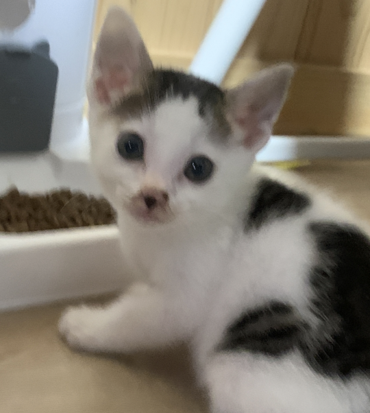

내 친구 시월이를 소개합니다
길에서 간택당한 6개월 고등어냥 시월이를 소개합니다 🐱

이름 : 시월 (10월달에 왔기 때문)
나이 : 6개월
종 : 길고양이 / 고등어
특징(성격) : 호랑이처럼 걷는다 🐾
길에서 간택당한 6개월 고등어냥 시월이를 소개합니다 🐱

이름 : 시월 (10월달에 왔기 때문)
나이 : 6개월
종 : 길고양이 / 고등어
특징(성격) : 호랑이처럼 걷는다 🐾
댓글 224